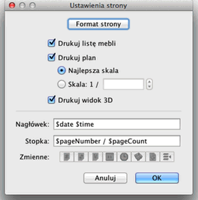
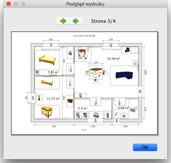

| Wydruk domu | |||
|
Aby wydrukować dom wybierz Plik > Drukuj.... Domyślnie Sweet Home 3D drukuje listę mebli, plan, i
aktualny
widok 3D domu używając domyślnego rozmiaru papieru,
marginesów i
orientacji.  W tym panelu możesz zmienić rozmiar papieru, jego orientację etc. poprzez kliknięcie przycisku Format strony. Możesz zdecydować również czy lista mebli, plan, widok 3D mają byc drukowane, czy nie. Aby obejrzeć jak dom będzie wyglądał na wydruku skorzystaj z pozycji Plik > Podgląd wydruku.  W tym oknie podglądu wydruku możesz przejrzeć strona po stronie jak Twój dom będzie wyglądał na wydruku. Aby zmienić przeglądane strony klikaj na strzałkach na górze panelu, lub użyj strzałek kursora. |
|